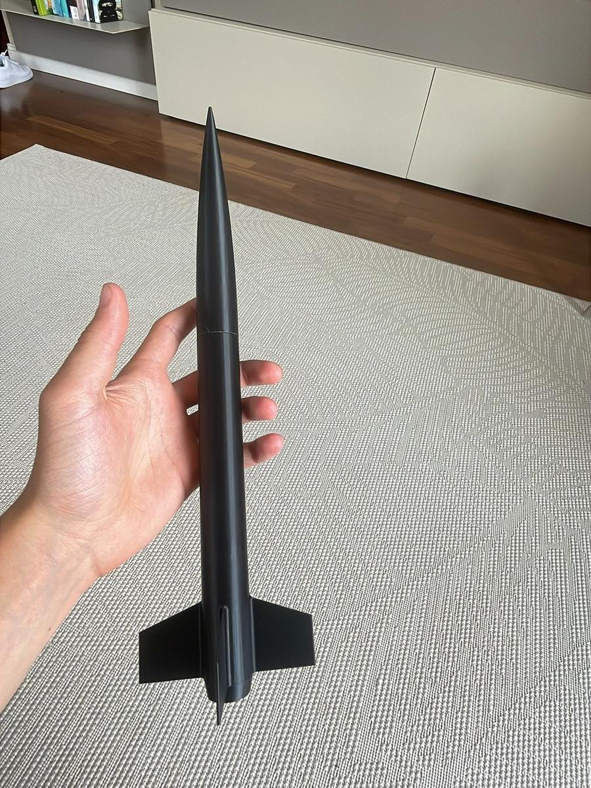
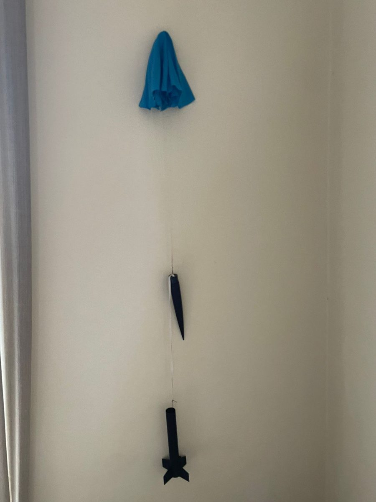
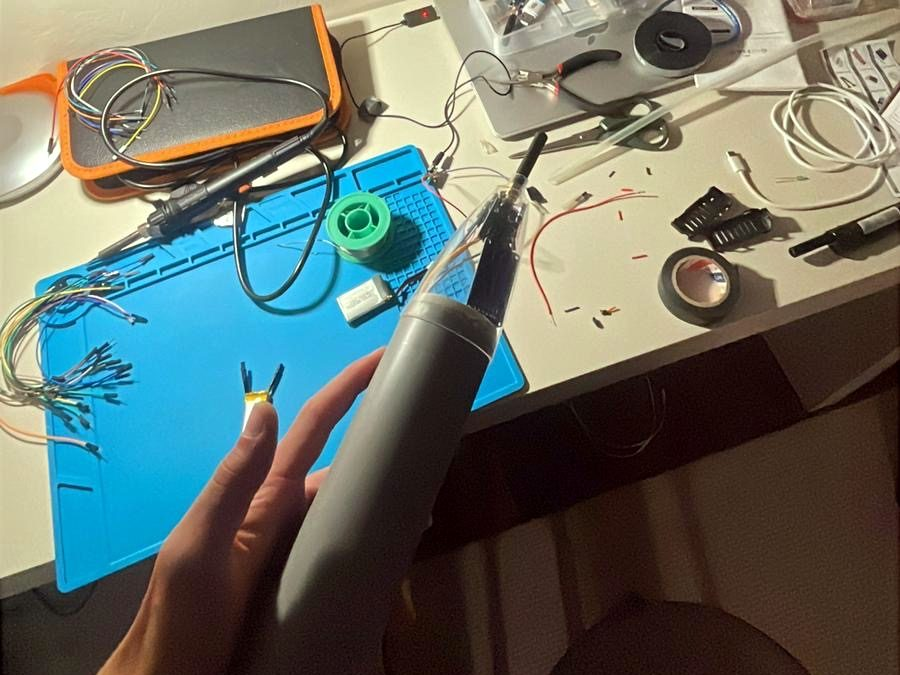
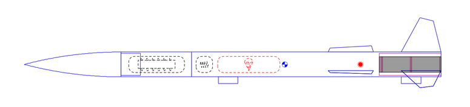
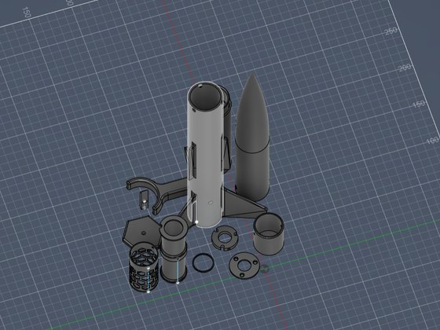
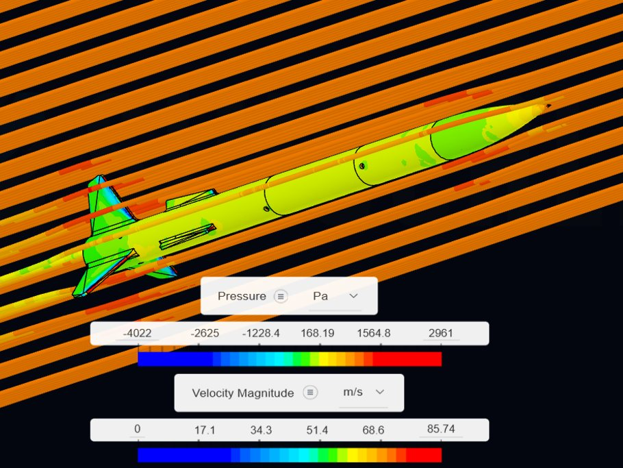
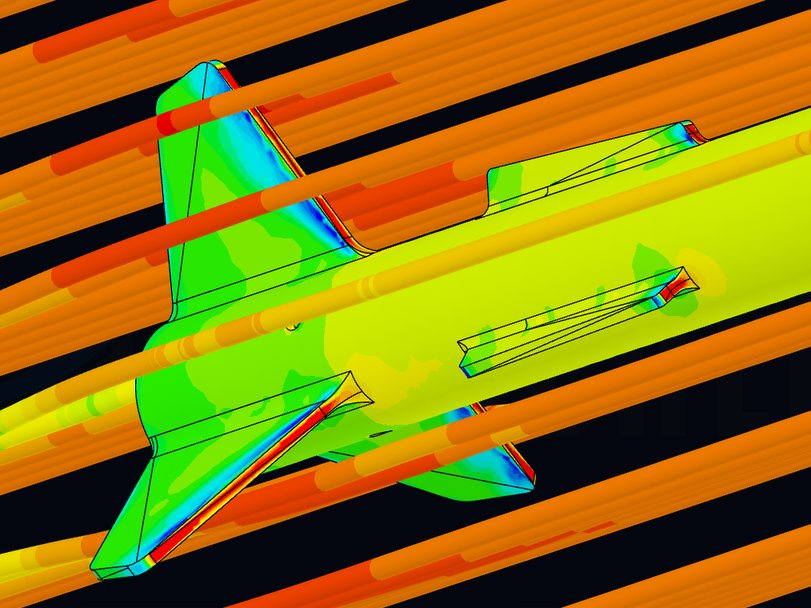

Seeker programmeProgramma Seeker




Model rockets designed end to end. Stability and flight profile in OpenRocket, structure and mass in Fusion 360, then fabrication, launch and recovery. If the real flight does not match the simulation, the model is wrong, and the error has to be found before the next launch.
Razzi modellistici progettati dall'inizio alla fine. Stabilità e profilo di volo in OpenRocket, struttura e masse in Fusion 360, poi fabbricazione, lancio e recupero. Se il volo vero non somiglia alla simulazione, è sbagliato il modello, e l'errore va trovato prima del lancio successivo.
I built my first rocket in 2024, at 14. Seeker-One came the year after and set the baseline for the programme: geometry, stability margin, recovery under a parachute. What it could not do was measure its own flight, so Seeker-II was built around that.
Il mio primo razzo l'ho costruito nel 2024, a 14 anni. Seeker-One è arrivato l'anno dopo e ha fissato la base del programma: geometria, margine di stabilità, recupero con il paracadute. Quello che non poteva fare era misurare il proprio volo, e Seeker-II è nato intorno a questo.
Seeker-II carries a flight computer I designed, with an ESP32-C3, altimeter, IMU and LoRa telemetry at 433 MHz. On the ground, a second ESP32 receives the packets, and a dashboard I wrote in Python shows altitude, acceleration and signal strength live and saves the flight to CSV.
Seeker-II porta un computer di volo progettato da me, con ESP32-C3, altimetro, IMU e telemetria LoRa a 433 MHz. A terra un secondo ESP32 riceve i pacchetti, e una dashboard che ho scritto in Python mostra in diretta quota, accelerazione e potenza del segnale, e salva il volo in CSV.
The whole airframe, from the nose cone to the fins, is modelled in Fusion 360 and 3D printed. In OpenRocket the rocket is 63.8 cm long and weighs about 364 g at launch; on a Tsp E20-6 it reaches 320 m, with a top speed of 82 m/s. A CFD simulation shows the air pressure on the fins and body, and the flow around the rocket.
Tutta la struttura, dall'ogiva alle alette, è disegnata in Fusion 360 e stampata in 3D. In OpenRocket il razzo è lungo 63,8 cm e pesa circa 364 g al lancio; con un Tsp E20-6 arriva a 320 m, con una velocità massima di 82 m/s. Una simulazione CFD mostra la pressione dell'aria su alette e corpo, e il flusso intorno al razzo.
Seeker-II · ≈364 g · 638 mm · Tsp E20-6 · ESP32-C3



